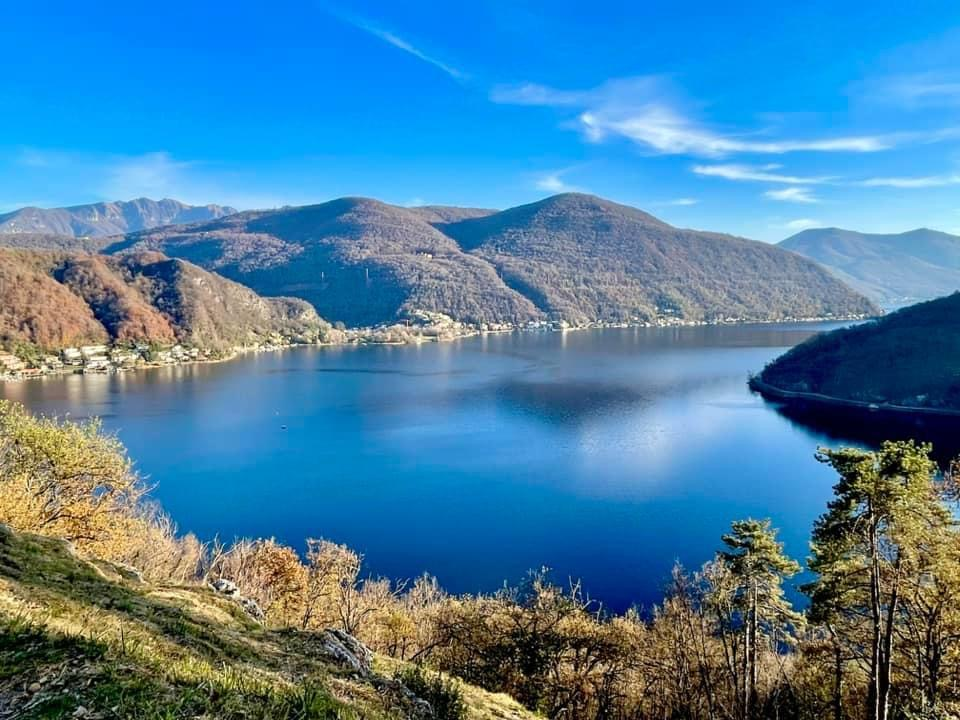

Quality of life
Mild climate, lake lifestyle, outdoor culture and one of the highest quality-of-life indices in Europe.

Discover
Ticino is Switzerland's Italian-speaking canton — a region where palm trees line the lakeshore, Alpine peaks rise behind medieval villages, and the pace of life feels distinctly Mediterranean.
Lugano, its largest city, sits on the shores of Lake Lugano with a cosmopolitan atmosphere, world-class culture, excellent international schools and direct connections to Milan and Zurich.



Mild climate, lake lifestyle, outdoor culture and one of the highest quality-of-life indices in Europe.
Between Milan and Zurich — close to Italy, connected to the world, yet peacefully Swiss.
International schools, bilingual programmes and a strong local education system.
Favourable cantonal tax environment with pathways including lump-sum taxation for qualifying individuals.
Museums, gastronomy, events and a vibrant international community on the lake.
Swiss political stability, healthcare excellence and one of the world's safest environments for families.

From finding the right neighbourhood to enrolling your children and building your social circle — we know Ticino because we live here.
Plan your move